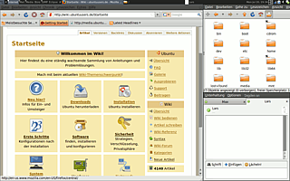
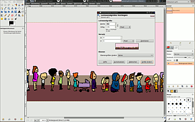

Awesome
Ausbaufähige Anleitung
Dieser Anleitung fehlen noch einige Informationen. Wenn Du etwas verbessern kannst, dann editiere den Beitrag, um die Qualität des Wikis noch weiter zu verbessern.
Anmerkung: Der Abschnitt Integration in GNOME bezieht sich noch auf die Desktop-Umgebung GNOME 2, die inzwischen nicht mehr Bestandteil von Ubuntu ist.
Dieser Artikel wurde für die folgenden Ubuntu-Versionen getestet:
Ubuntu 14.04 Trusty Tahr
Artikel für fortgeschrittene Anwender
Dieser Artikel erfordert mehr Erfahrung im Umgang mit Linux und ist daher nur für fortgeschrittene Benutzer gedacht.
Zum Verständnis dieses Artikels sind folgende Seiten hilfreich:
Awesome  ist ein Tiling- und Tag-fähiger Fenstermanager und stark erweiterter Fork von DWM. Er benutzt für die Kommunikation mit dem XServer die neue Xcb-Bibliothek, welche über kurz oder lang die langsamere Xlib ersetzen soll. Außerdem unterstützt Awesome RandR und ist somit auch in Zukunft bestens für den Betrieb auf mehreren Monitoren gerüstet.
ist ein Tiling- und Tag-fähiger Fenstermanager und stark erweiterter Fork von DWM. Er benutzt für die Kommunikation mit dem XServer die neue Xcb-Bibliothek, welche über kurz oder lang die langsamere Xlib ersetzen soll. Außerdem unterstützt Awesome RandR und ist somit auch in Zukunft bestens für den Betrieb auf mehreren Monitoren gerüstet.
Installation¶
Awesome kann über die Paketverwaltung mit Hilfe folgenden Paketes installiert werden [1]:
awesome (universe)
 mit apturl
mit apturl
Paketliste zum Kopieren:
sudo apt-get install awesome
sudo aptitude install awesome
Wenn nun awesome nicht am Loginscreen auswählbar ist, muss noch mit einem Editor [2] mit Rootrechten in /usr/share/xsessions/awesome.desktop
NoDisplay=true
zu
NoDisplay=false
geändert werden.
Konfiguration¶
|  |
| Awesome mit GNOME-Session |
Die Konfigurationsdateien von Awesome liegen nach der Installation im Ordner /etc/xdg/awesome. Dort sollte man sie allerdings nur bearbeiten, wenn die Änderungen für alle Benutzer des Computers gelten sollen.
Besser ist es normalerweise, den Ordner zunächst nach ~/.config zu kopieren und dort die Änderungen benutzerspezifisch vorzunehmen. Die Hauptkonfigurationsdatei ist das Lua-Skript rc.lua (also ~/.config/awesome/rc.lua). Hier kann man mit einem Editor [2] beispielsweise sofort mit dem Anpassen der Tastenkombinationen beginnen, indem man einfach die bereits vorhandenen Anweisungen anpasst.
Informationen zur Bearbeitung der Konfigurationsdatei sind im Awesome-Wiki zu finden.
Damit die gemachten Änderungen wirksam werden, muss Awesome neu gestartet werden. Dies geht bequem mit der Tastenkombination Windows + ⇧ + R .
Bedienung¶
In der Standardkonfiguration existieren unter anderem folgende Tastenkombinationen:
| Tastenkombination | Wirkung |
| Windows + Strg + R | startet Awesome neu |
| Windows + ⇧ + Q | beendet Awesome und kehrt (je nachdem, ob ein Displaymanager verwendet wird) zur Konsole oder zu dem Displaymanager zurück |
| Windows + R | öffnet eine sog. Promptbox, der eingegebene Befehl wird ausgeführt |
| Windows + ⏎ | öffnet ein Terminal |
| Windows + J | wechselt zum nächsten Fenster |
| Windows + K | wechselt zum vorherigen Fenster |
| Windows + 1 bis 9 | wechselt zu dem durch die Zahlentaste gekennzeichneten "Tag" |
Eine vollständige Liste lässt in einem Terminal (mit Windows + ⏎ zu öffnen) mit dem Befehl
man awesome
abrufen.
|  |
| GIMP-Fenster aus dem Tiling geschoben |
Klebende Ränder¶
Zieht man ein schwebendes Fenster an den Bildschirmrand, so verkleinert sich der Tiling-Bereich und das schwebende Fenster wird zwischen diesem und dem Bildschirmrand abgelegt. Das ist nicht nur für zusätzliche Panels sinnvoll, sondern zum Beispiel auch für die Werkzeugfenster von GIMP. Da speziell bei GIMP alle Fenster außer die Bildfenster per Voreinstellung schweben, lässt sich so hervorragend arbeiten.
Erweiterungen¶
Shifty: Dynamische Tags¶
Normalerweise definiert man in der Konfigurationsdatei ein paar Tags (oder benutzt die Standard-Tags "1" bis "9") und weist dann vielleicht noch einigen Programme statisch Tags zu. Da dies nicht besonders flexibel ist, gibt es die Erweiterung Shifty. Damit werden die Tags automatisch beim Starten der Programme erzeugt. Das Verhalten kann fast nach belieben bestimmt werden. Beispielsweise kann man das Tag "web" so einstellen, dass dort immer nur ein maximiertes Browserfenster erlaubt ist. Startet man nun von hier ein anderes Programm, wird dafür ein neues Tag erzeugt, das so heißt, wie das gestartete Programm (wenn für dieses Programm kein spezielles Tag definiert ist). Auch können Tags jederzeit erzeugt, umbenannt, verschoben oder gelöscht werden.
Die Einrichtung von Shifty wird im Awesome-Wiki beschrieben.
Tipps¶
Integration in GNOME¶
Ein gangbarer Weg zum Fenstermanager auswechseln ist, folgendes Startskript mit einem Editor [2] mit Rootrechten anzulegen und als /usr/local/bin/awesome-gnome zu speichern.
#!/bin/sh export WINDOW_MANAGER="awesome" gnome-session
Dann legt man wie hier beschrieben einen Eintrag im GDM-Menü an, der dieses Skript aufruft.
Im Awesome-Wiki gibt es weitere Hinweise zur Integration von Awesome in GNOME wie auch in KDE .
Awesome neben bestehender GNOME-Umgebung einrichten¶
Verschiedene Elemente und Einstellungen der GNOME Umgebung sind auf den GNOME-Standard-Fenstermanager Metacity bzw. Compiz zugeschnitten. Dazu gehören unter anderem das GNOME-Panel oder die Nautilus-Desktop-Integration. Daneben verwendet man unter GNOME eventuell Anwendungen wie das Tilda-Terminal, das unter einem Tiling-Fenstermanager wie Awesome nicht korrekt funktioniert.
Andererseits bietet GNOME/Ubuntu mit dem NetworkManager, der Energieverwaltung, der Aktualisierungsverwaltung, diversen Daemons und Werkzeugen einen Komfort, auf den man eventuell nicht verzichten möchte. Um nun Awesome als Fenstermanager zu betreiben, ohne dabei eine bestehende GNOME-Umgebung dauerhaft verändern zu müssen, bietet sich folgende Lösung an:
Zum Start von Awesome in einer modifizierten GNOME-Umgebung legt man das Skript /usr/share/gnome/start_awesome_gnome-session an:
#!/bin/bash #Nautilus Desktop deaktivieren gconftool-2 --type bool --set /apps/nautilus/preferences/show_desktop False #awesome als Fenstermanager einsetzen gconftool-2 --type string --set /desktop/gnome/session/required_components/windowmanager awesome #gnome-panel abschalten gconftool-2 --type string --set /desktop/gnome/session/required_components/panel ' ' export WM="awesome" gnome-session
Zum Start der bereits vorhandenen GNOME-Konfiguration benötigt es ein weiteres Skript /usr/share/gnome/start_gnome-session:
#!/bin/bash #Nautilus Desktop aktivieren gconftool-2 --type bool --set /apps/nautilus/preferences/show_desktop True #compiz als Fenstermanager einsetzen gconftool-2 --type string --set /desktop/gnome/session/required_components/windowmanager compiz #gnome-panel einschalten gconftool-2 --type string --set /desktop/gnome/session/required_components/panel gnome-panel export WM="compiz" gnome-session
Dabei wird davon ausgegangen, dass als Fenstermanager Compiz, als Panel das GNOME-Panel und Nautilus zur Bedienung des Desktops verwendet werden. Gegebenenfalls können diese Parameter mit dem Befehl
gconftool-2 --get /hier/steht/der/Pfad/zum/Parameter
oder mittels einer grafischen Oberfläche mit
gconf-editor
abgefragt und im start_gnome-session-Skript entsprechend geändert werden.
Um nun beim Anmelden zwischen den beiden Umgebungen auswählen zu können, verweist man in der bereits vorhandenen /usr/share/xsessions/gnome.desktop auf das Skript zum Starten der GNOME Umgebung:
[Desktop Entry] Name=GNOME Comment=This session logs you into GNOME Exec=/usr/share/gnome/start_gnome-session TryExec=/usr/share/gnome/start_gnome-session Icon= Type=Application X-Ubuntu-Gettext-Domain=gnome-session-2.0
und erstellt einen neuen GDM-Menü-Eintrag /usr/share/xsessions/awesome.desktop, der das Skript der Awesome-Umgebung startet:
[Desktop Entry] Encoding=UTF-8 Name=awesome Comment=Highly configurable framework window manager Exec=/usr/share/gnome/start_awesome-session
Sollte es notwendig sein, kann man nun noch festlegen, welche Programme in Abhängigkeit des gewählten Fenstermanagers per Autostart aufgerufen werden sollen. Hierzu ist folgendes Skript, das man unter /usr/share/ghome/autostart_depend_on_wm speichert, erforderlich:
#!/bin/bash if [ $WM = "compiz" ]; then tilda elif [ $WM = "awesome" ]; then awsetbg -c /usr/share/backgrounds/awesome.png fi exit 0
Damit dieses Skript bei jedem Anmeldevorgang aufgerufen wird, legt man einen Autostart-Eintrag ~/.config/autostart/autostart_depend_on_wm.desktop an:
[Desktop Entry] Type=Application Exec=/usr/share/gnome/autostart_depend_on_wm Hidden=false X-GNOME-Autostart-enabled=true Name[de_DE]=Autostart in Abhängigkeit vom WindowManager Name=Autostart in Abhängigkeit vom WindowManager Comment[de_DE]= Comment=
Somit lässt sich während dem Anmeldevorgang über das GDM-Menü bequem zwischen GNOME mit Standard-Fenstermanager und GNOME mit Awesome-Fenstermanager auswählen.
- Erstellt mit Inyoka
-
 2004 – 2017 ubuntuusers.de • Einige Rechte vorbehalten
2004 – 2017 ubuntuusers.de • Einige Rechte vorbehalten
Lizenz • Kontakt • Datenschutz • Impressum • Serverstatus -
Serverhousing gespendet von